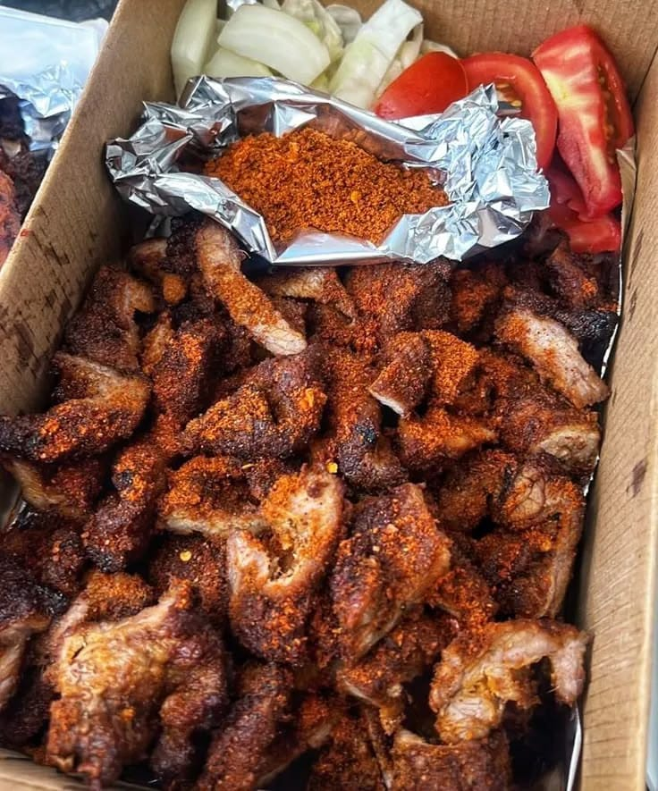

FRESH, LOCAL & MADE WITH LOVE
What are you craving today?
Yaba, Lagos · 480 home chefs nearby
DISCOVER A FLAVOUR
Food Categories
Browse by cuisine type
HANDPICKED FOR YOU
Featured Chef
Meet the person behind your next favourite meal
CLOSE TO YOU
Nearby Chefs
Ordering within your area


THIS WEEK'S FAVOURITES
Popular Right Now
Trending dishes this week
 Trending
TrendingJollof Rice & Chicken
Chef Amaka
₦2,800
Egusi Soup & Pounded Yam
Mama Titi
₦3,200
Suya Platter (500g)
Oga Grill House
₦4,200
Artisan Puff-Puff
Aunty Peace Pastries
₦1,200No food or chef was found. Try another search.
WHY HOMEPOT
Home-cooked Meals
Flavorful meals, made just for you.
Verified Chefs
Every chef passes health and quality checks before joining HomePot.
Fast Delivery
Home-cooked meals delivered to your doorstep in minutes.
Safe Kitchen
Every kitchen is registered and held to strict hygiene standards.
Fresh food made near you
Made fresh after you order
Loved by local foodies
FROM KITCHEN TO YOUR DOOR
Your meal journey, made simple.
Every order is prepared by a trusted local chef and brought straight to you while it is still fresh.
Find a craving
Explore meals from talented cooks near you.
Make it yours
Choose your meal and add the little extras you love.
Review your order
Add meals to your cart and review your choices.
Pay securely
Choose your preferred payment method with confidence.
Track it live
Follow your food from the kitchen to your door.
Enjoy & review
Receive, taste, and review your new favourite dish.